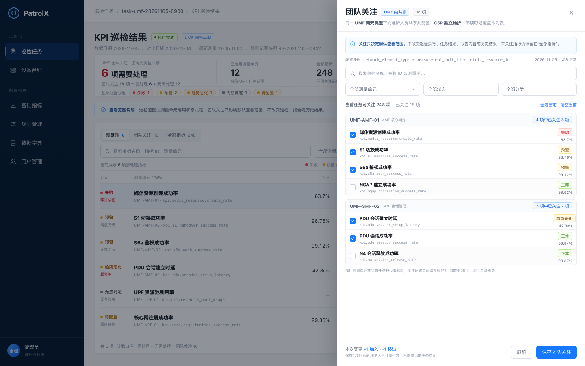
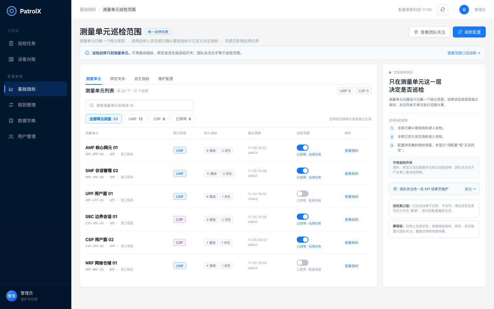
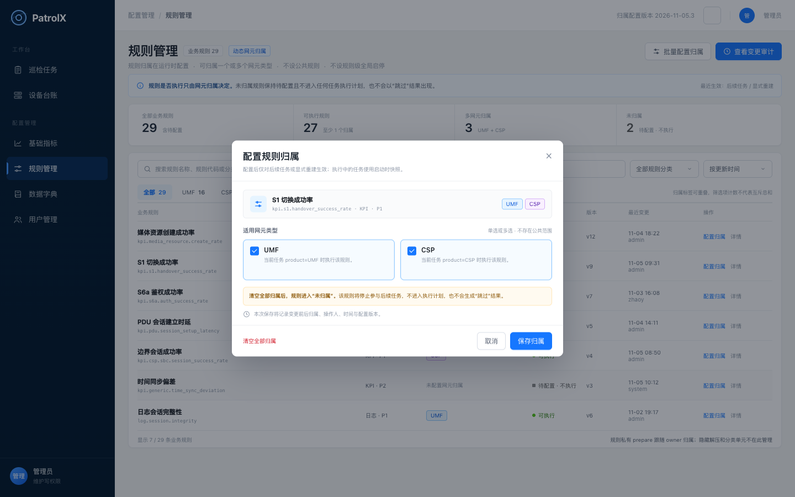
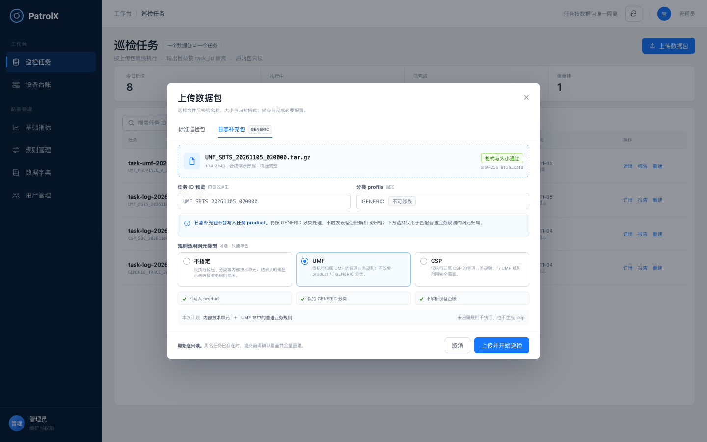

关键界面
点击图片可在 Chrome 中查看 1440 × 900 原尺寸 01默认进入“需处理”，结果与证据同屏首屏回答今天先看什么；互斥分组、团队关注汇总和全部指标全貌保持独立。证据侧栏展示判定原因、阈值、源指标口径、7 日趋势与来源文件；源包成功率只显示原值和真实源列名，只有本地派生指标才展示公式。打开原图 ↗
01默认进入“需处理”，结果与证据同屏首屏回答今天先看什么；互斥分组、团队关注汇总和全部指标全貌保持独立。证据侧栏展示判定原因、阈值、源指标口径、7 日趋势与来源文件；源包成功率只显示原值和真实源列名，只有本地派生指标才展示公式。打开原图 ↗

02手动维护 UMF 内共享关注从当前任务可关注指标中批量加入或移出；CSP 独立维护，不跨网元类型读取或覆盖。关注只影响默认查看范围。打开原图 ↗
03测量单元是唯一巡检启停粒度基础指标页移除“关注指标”页签，指标、绑定和派生均无独立巡检开关；停用只影响后续任务，配置与关注保留。打开原图 ↗
04业务规则动态归属一个或多个网元无公共范围，也无规则级全局启停；未归属规则进入“待配置 · 不执行”。清空最后归属后立即停止后续任务匹配。打开原图 ↗
05日志补充包单选规则适用网元UMF / CSP / 不指定三选一；不写入 product，不改变 GENERIC 分类，不触发设备台账解析。未指定时只执行内部技术单元。打开原图 ↗确认状态：v2 已确认。整体界面结构沿用已讨论版本；媒体资源创建成功率已按源包直出、不重算的证据口径修订，可作为实现依据。